Queijo Mussarela
Textura macia e sabor suave, perfeito para lanches, pizzas e gratinados.
R$ 38,90/kg

Queijo de Coalho Palito
Tradicional do Nordeste, ideal para assar na brasa e saborear com amigos.
R$ 42,90/kg
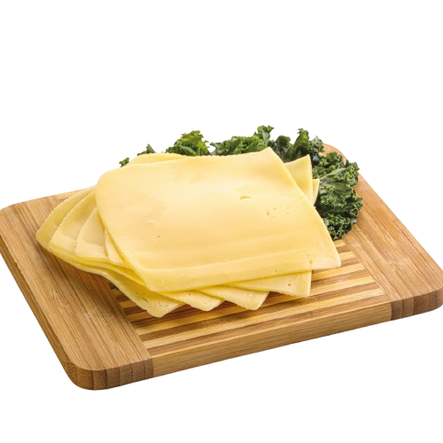
Queijo Prato Lanche
Sabor suave e derretimento perfeito, muito usado em sanduíches e lanches rápidos.
R$ 39,90/kg

Queijo Colonial
Receita tradicional, com sabor marcante e textura firme, típico do Sul do Brasil.
R$ 35,90/kg

Queijo Provolone Fresco Defumado
Defumação suave que realça o sabor e aroma, ideal para aperitivos.
R$ 46,90/kg

Queijo Tipo Gouda
Holandês, macio e amanteigado, com sabor levemente adocicado.
R$ 54,90/kg

Queijo Tipo Gruyère
Queijo suíço de sabor encorpado, perfeito para fondues e receitas sofisticadas.
R$ 68,90/kg
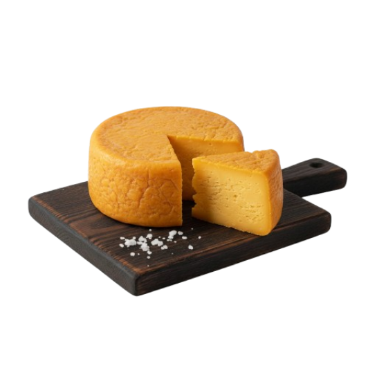
Queijo Parmesão
De maturação longa, textura granulada e sabor intenso. Excelente ralado em massas.
R$ 72,90/kg
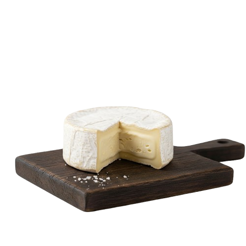
Queijo Brie
Francês, de casca branca e interior cremoso, sabor suave e amanteigado.
R$ 89,90/kg
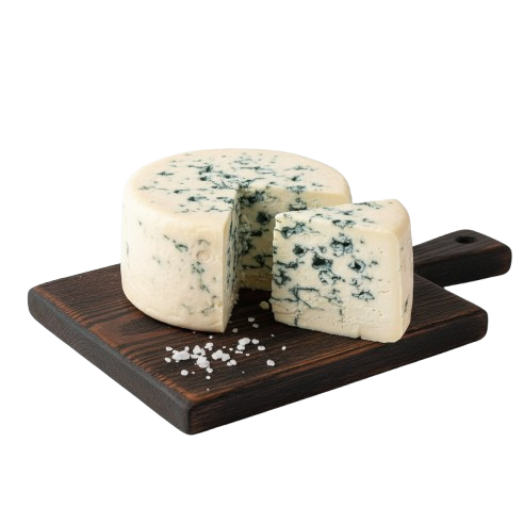
Queijo Gorgonzola
De veios azuis marcantes, sabor forte e picante, ótimo em molhos e saladas.
R$ 64,90/kg
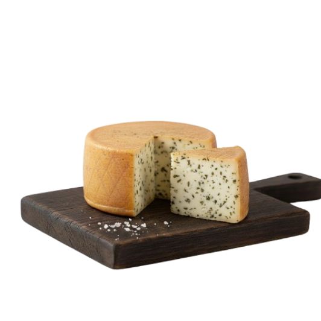
Queijo Colonial com Orégano
Sabor marcante e aroma especial das ervas, perfeito para lanches e tábuas de frios.
R$ 44,90/kg
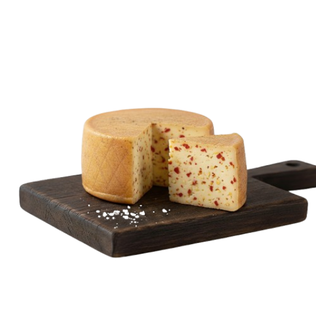
Queijo Colonial com Pimenta Calabresa
Picância equilibrada que realça o sabor do queijo artesanal.
R$ 46,90/kg
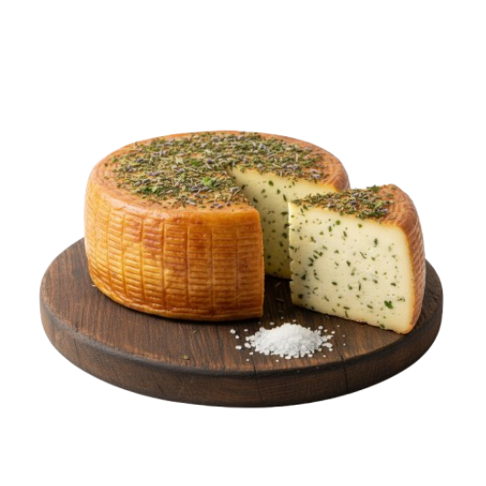
Queijo Colonial com Ervas Finas
Mistura de temperos aromáticos que traz um sabor sofisticado e leve.
R$ 47,90/kg
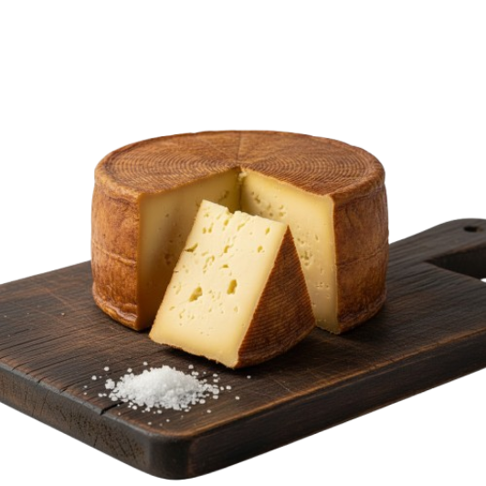
Queijo Colonial Curado
Maturado por meses, sabor intenso e textura firme, ideal para degustar puro.
R$ 55,90/kg
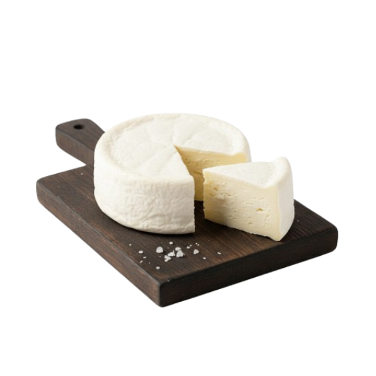
Queijo Minas Frescal
Leve, úmido e suave, muito consumido no café da manhã brasileiro.
R$ 32,90/kg
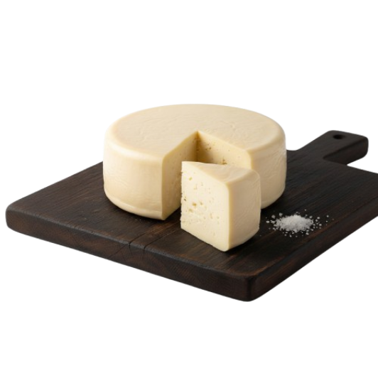
Queijo Minas Padrão
Mais firme que o frescal, sabor suave e ótimo para sanduíches e receitas.
R$ 37,90/kg
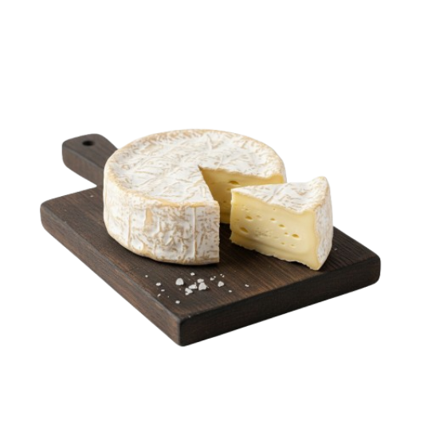
Queijo Camembert
Francês, cremoso e de casca branca, sabor mais intenso que o Brie.
R$ 92,90/kg
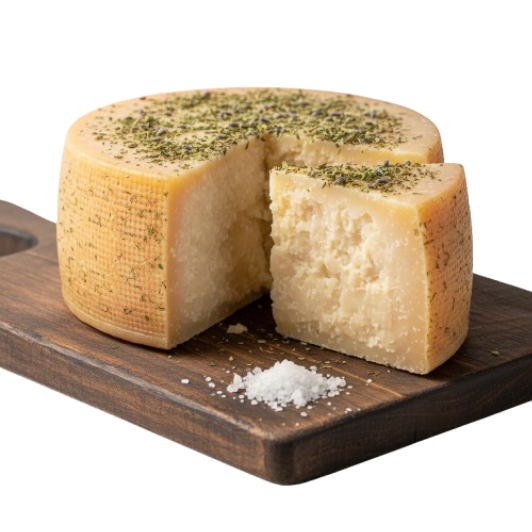
Queijo Parmesão Temperado com Ervas Finas
Intenso e aromático, perfeito para realçar massas, saladas e aperitivos.
R$ 92,90/kg